Второй этаж · юго-запад

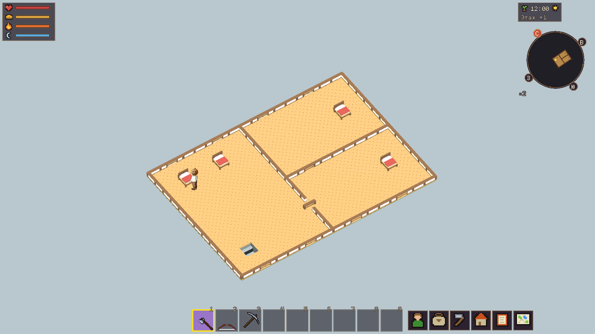

Последующее исправление дверей: закрытая и открытая створка, установка игроком.
Актуальная версия: интерьер с нижними этажами и улицей — новая галерея. Ниже сохранён промежуточный вариант.
Один сохранённый мир, тот же персонаж и пять одинаковых ракурсов. Нативный Godot, RX 580. Нажмите на кадр для полного размера.
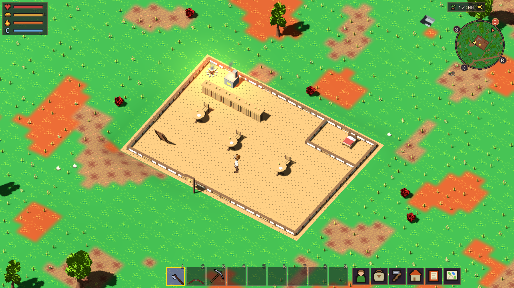
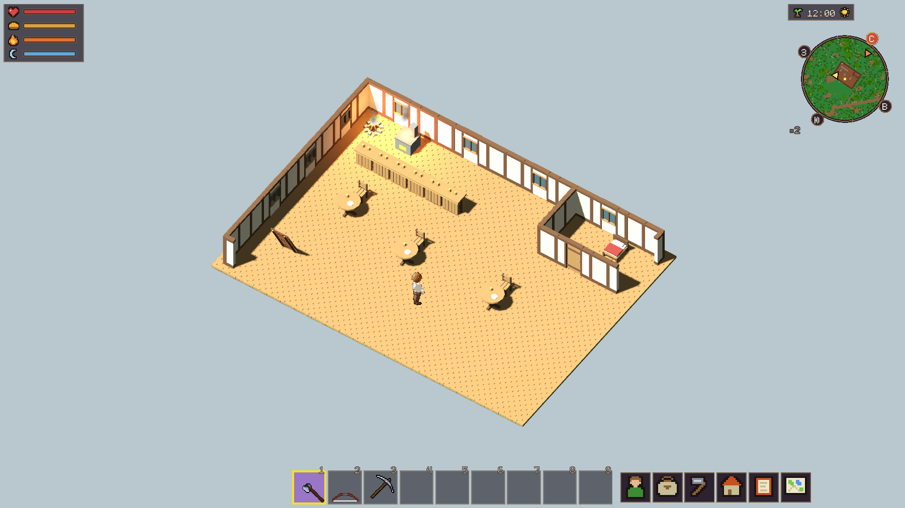
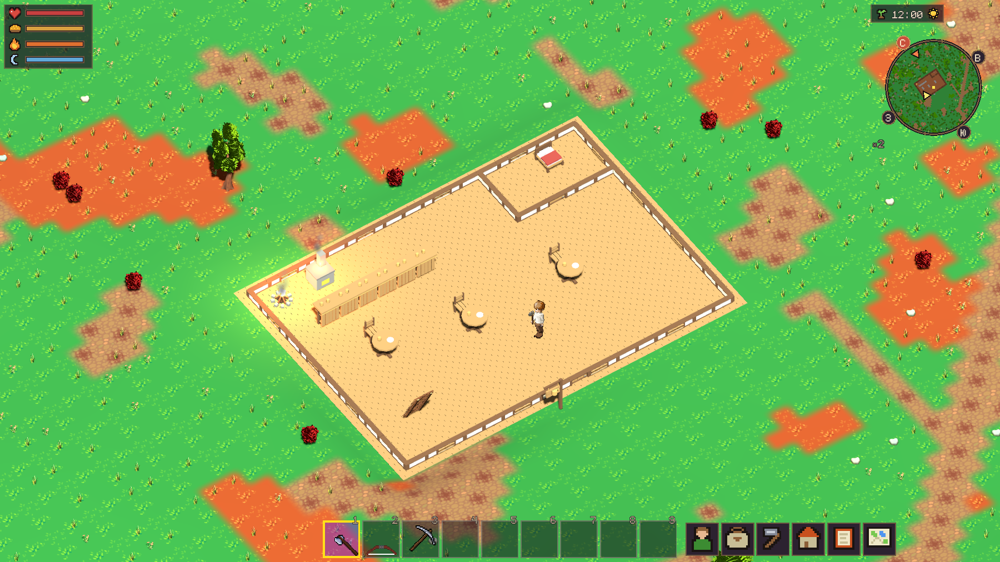
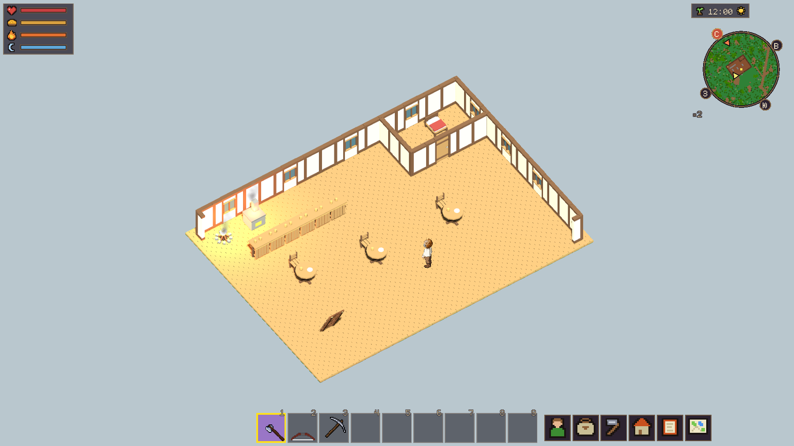
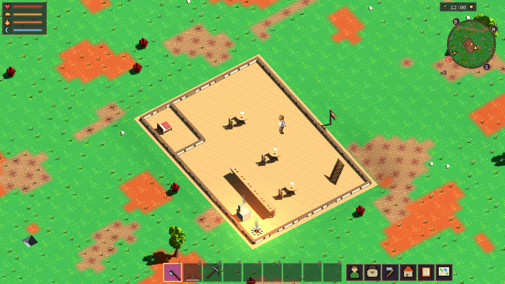
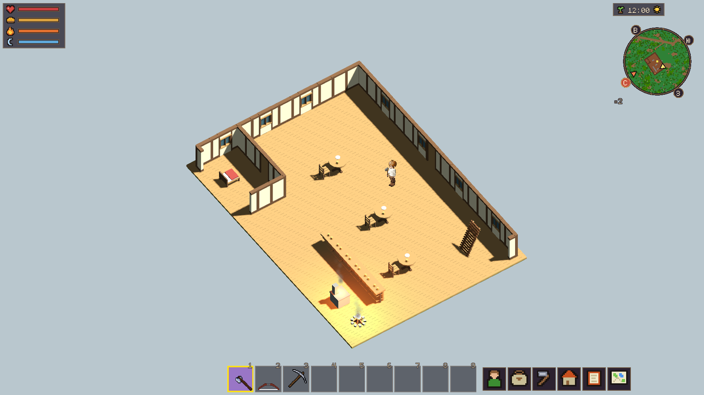
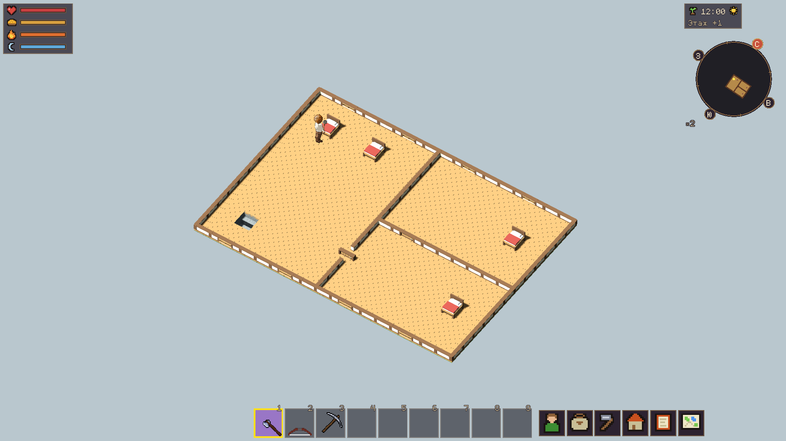
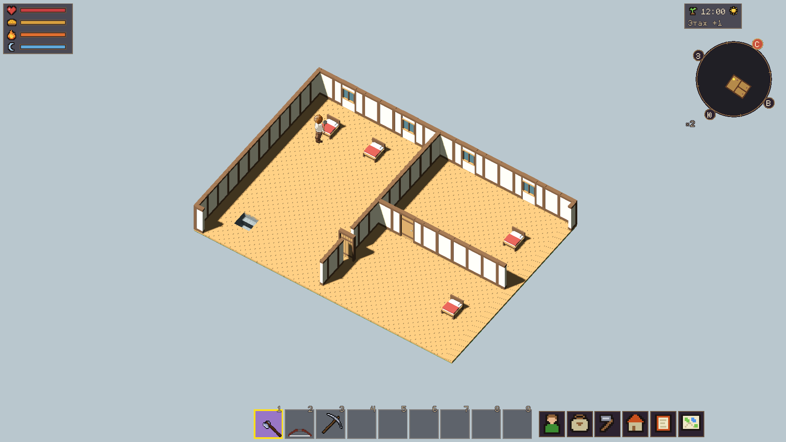

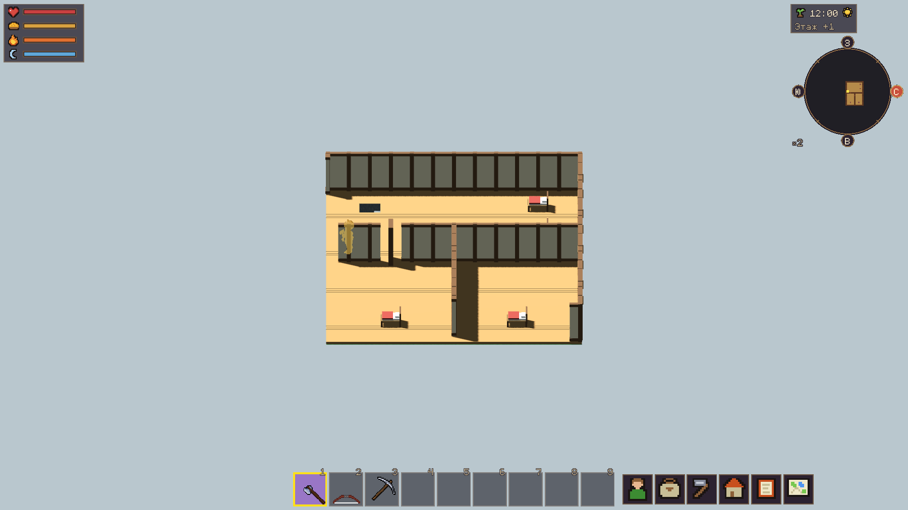
Предыдущий кадр ошибочно показывал только перекрытие первого этажа. Теперь передаются и отображаются второй этаж и кровля.
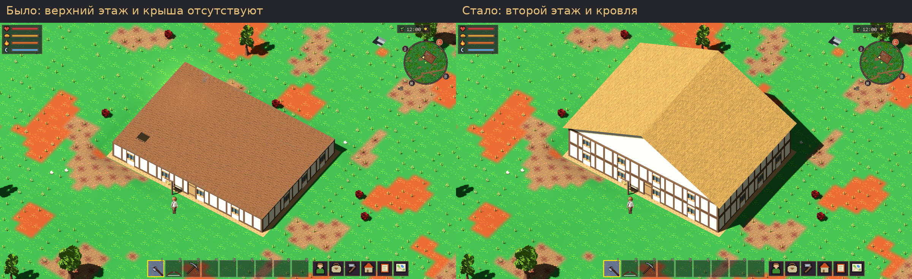
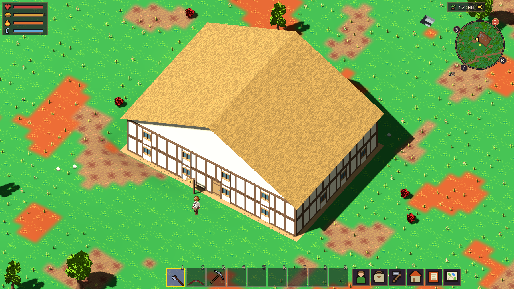